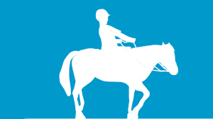

| Activities... Horse Riding | Wine Making | Salted Duck Egg DIY | Shell Craft DIY |
In the early time, White Horse Farm is Lin’s Stud Farm. Therefore, you can’t miss riding a horse when you visit here. The owner picked a gentle white horse because a horse with a sweet temper is safer for visitors to ride. |

|
||||||||||||||||||||||||